Acasa, în obcina vlașchilor
Scurt popas inainte de despărțire
Bârdo, satul pustiu
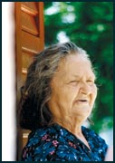 Stă la o măsuță în umbra casei, privind drumul. Pe măsură ce ma apropii de ea, se ridică în picioare. E bătrâna și se ridică cu greu. Cu o mână se sprijină de masă, iar cu cealaltă, dusă streașină peste ochi, încearcă să mă recunoască în soarele amiezii de vară. Cine sunt? Nu m-a văzut niciodată, dar îmi zâmbește cu bucurie, de parcă aș fi feciorul întors de pe front. "Bire ai verit! Domnu cu tire," îmi spune, apoi mă apucă de umeri și mă privește de-aproape, de parcă ar vrea să se convingă că exist cu adevărat. Om viu, venit de departe. "România... ie, ie... România," îngână. Îmi ia mâna în mâna ei și în timp ce mi-o scutură neîncetat, fața i se luminează de parcă vede un prieten drag. "Frate. Fraț al nost. Noi, istro-romeni, nu suntem rumeri, dar cuvintam românește, tot una limba cu voi. Io sunt Iolanda Starai. Sirup dorește?" Ne strângem mai departe de mâini. știm amândoi că trăim mai mult decât o simplă întâlnire între doi străini. Trăim... istorie. Eu vad și ascult pentru prima dată în viața un istro-român. Aud pentru prima oară limba asta ciudată, atât de asemănătoare cu cea pe care-o vorbesc. Iolanda are dreptate. Noi doi suntem "fraț".
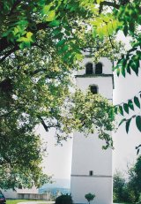 Ne așezăm împreună la măsuță din fața casei. Privim amândoi drumul încins de soare, pe care eu tocmai am venit: peste o mie de kilometri, din România în Croația, către peninsula Istria, ce înaintează în Marea Adriatică. Am mers după satele marcate pe hartă cu nume românești: Sucodru, Costârceni, Rumeri, Livadea, Sușnievița... Așa am ajuns la poalele Muntelui Maggiore, Muntele Mare al păstorilor istro-români. Pe măsura ce înaintam, peisajul semăna tot mai mult cu dealurile Buzăului, de acasă. De fapt, era la fel cu tot ce văzusem peste tot pe unde umblasem în expedițiile "Formulei As," în căutarea de urme românești. țara istro-românilor seamănă izbitor cu teritoriile friulilor din Dolomiții Italiei și cu cele ale bascilor din Pirineii francezi. În munte, tot mai în munte, printre cariere de piatră și vârfuri greu accesibile. Așa am ajuns în Costârceni și am urcat mai departe, până sus, în vârful colinei, în Bârdo...
Sat nemișcat și tăcut. Ca o coroană pe creștetul colinei sunt așezate casele lui. De fapt, întregul sat înseamnă trei ruine: o casă pipernicită, clopotnița și biserica părăsită, cu cimitirul din jurul ei. Drumul face o buclă în jurul clopotniței, ca să te trimită de unde ai venit și-atât.
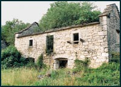 Prin ferestrele caselor în ruina izbucnește vegetația crescută sălbatic. Camerele sunt tapetate cu iedera, plopi înalți țâșnesc prin acoperișuri. Verdele întunecat al buruienilor se revarsă peste pervazul ferestrelor și peste pragurile fără uși.
Iolanda locuiește în casa pipernicită. Cu privirea fixată înainte, pare că de zeci de ani nu s-a mișcat de la măsuță ei, urmărind spectacolul naturii ce cotropește încet zidurile stacojii. Ai zice că așteaptă să fie și ea acoperită de iederă. Este ultimul supraviețuitor, singurul locuitor al satului Bârdo.
În neclintirea caniculei de amiază, bem "sirup" și Iolanda începe să-mi povestească. N-am nevoie de traducător. Chiar dacă nu înțeleg toate vorbele pe care le spune, îi înțeleg gândurile, zâmbetul de pe față și, mai cu seamă, emoția. Iar ele n-au nevoie de dicționar. Românește sau în istro-română sună la fel.
Bunicul și străbunicul cuvintau românește, își începe Iolanda povestea. Nu se știe de când. Așa ne-am pomenit noi, cu limba asta. Noi, istro-românii sau vlașchii, cum ni se spune pe-aici. În obcina noastră, noi, toți, cuvintam românește. Cândva, Bârdo era o seliște mare și frumoasă, 800 de oameni veneau în fiecare dumirică la slujbă, la bâsearică, unde prevtu le zicea mereu despre bătârii lor. În Bârdo n-a existat niciodată școală românească, dar oamenii și-au păstrat limba ca pe un lucru sfânt. Acum se pierde, spune cu tristețe Iolanda, copiii nu o mai vorbesc, tinerii merg departe la facultăți, unde învață în croată sau în italiană. Muce lucruri zicem pe hârvatschi (croată), mai ales tinerii cuvintă așa. Majoritatea istro-românilor au plecat în America, iar bătârii au murit spune Iolanda și privește spre cimitir. Apoi întoarce capul spre drum, ca și când s-ar auzi cineva venind. Dar nu vine nimeni.
Iolanda așteaptă de mai bine de 30 de ani să se întoarcă acasă vlașchii. I-a văzut pe toți plecând pe sub fereastra ei. Familie după familie. S-au dus în lumea largă, până a rămas doar ea, biserica și cimitirul.
Aerul neclintit de pe vârful colinei este spart, brusc, de țipatul unui clopot. Dangătul, ca o tânguire, străpunge căldura amiezii și se așterne peste ruinele satului. Nu e nimeni acolo, mă lămurește femeia. Prevtu a plecat demult. Dumirica, bisearica e pustie.
Astăzi, la biserica din Bârdo se mai strâng, din două în două săptămâni, 10 persoane. Nu mai e nimeni să tragă clopotele, care funcționează automat, cu un mecanism electric. Preotul vine și tine slujba, cei câțiva oameni își vizitează morții și apoi se întorc la casele lor răsfirate prin împrejurimi. Nu se mai țin serbări câmpenești ca altădată. Nimeni nu mai lucrează pământul. Oamenii s-au dus odată cu limba română și cu obiceiurile venite cine știe de unde și cine știe de când. Totul se sfârșește acolo unde drumul se termină, făcând o buclă în jurul bisericii: la cimitir.
Pe la asta oră povârneam cu toții în seliște, spune Iolanda. Și tare cântam. Veneam de la câmp, bucuroși. Duminica bătea clopotul anume pentru ca oamenii să se strângă în fața bisericii, să cânte, să joace și să împartă colaci. Era frumos pe atunci. Și trăia și Mario, iubitul șot al Iolandei, un bărbat frumos, cu bucle negre...
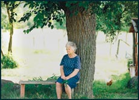 Iolanda n-a vrut să plece. S-a încăpățânat să rămână în sat. Stă cât e ziua de lungă la măsuța din fața casei și așteaptă sa se întoarcă oamenii, vremurile, fericirile de-altădată. Uneori știe ca e o speranța zadarnică. N-o sa mai fie nimic cum a fost. Limba va muri, odată cu oamenii. Bătârii se duc, copiii nu mai cuvinta pre românește. Doar Bruna, fata Iolandei, mai ține graiul înaintașilor ei, dar școlile sunt doar italienești și croate... Eu de aici nu plec, spune cu tristețe Iolanda. Aici m-am născut și-am crescut. Familia mea e aici, vechii mei, chiar dacă dincolo e gardul cimitirului.
Iolanda se așează din nou la măsuță ei. Du-te cu bire. Domnu te-ajute, îmi spune. Ea nu știe. Nu știe că limba pe care o vorbește e declarată de UNESCO limbă protejată, pe cale de dispariție. Nu știe să spună, ca lingviștii, că odată cu limba istro-românilor, dispare o cultură întreagă, obiceiurile, lucrurile așa cum erau ele rânduite în limba vlașchi. Dar simte, știe că este așa. Undeva, în străfundurile ființei sale, resorturi neștiute și ascunse de secole o fac să nu plece. Să reziste singură, printre ruinele și crucile istro-românilor.
"În ceasta casă se vorbește doar românește"
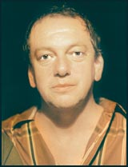 "Fraț rumeri! Fraț mei buri!," strigă Pepo Glavina și ne ia pe sus. Ne îmbrățișează și ne pupă pe amândoi obrajii. E roșu la față de emoție, vocea și mâinile îi tremură. Ne invită în casă cu cea mai mare curtoazie, de parcă am fi președinți, nu doar simpli reporteri. Întinde pe masa rotundă din salon o pânză curată și aduce cel mai bun vin al său. Toarnă în pahare și apoi ne privește așa, de parcă nu-i vine să creadă că suntem chiar în casa lui: "Frați mei din România!," spune și își șterge două lacrimi de bucurie.
Trei zile, Pepo Glavina din Sușnievița a fost de negăsit. De fiecare dată când întrebam de el, oamenii aveau mai întâi un zâmbet în colțul gurii. Apoi ne lămureau că e plecat în munte. Singur. Ce face de trei zile singur, pe Monte Maggiore? "Petrece!" Ne răspundeau vecinii care îi știu obiceiurile. "Stă în sălbăticie, petrece, umblă singur. Cine poate ști ce face Pepo în inima muntelui?" și mereu același zâmbet îngăduitor și plin de înțelegere pentru vecinul lor. De bună seamă, îl cred un pic țicnit. Dar față în față cu el, am descoperit mai degrabă un om emotiv. Un adolescent care nu vrea să se maturizeze, plin de pasiune în tot ceea ce face sau zice. Cu ochii mari, albaștri, câteodată cu mișcări de timid ce încearcă să își înfrângă reținerile. În Sușnievița, toată lumea îl cunoaște pe Pepo Glavina pentru ciudățeniile lui, și, mai ales, pentru marea lui dragoste: limba română.
A strigat pe toate ulițele satului că istro-româna nu trebuie să moară. A strigat pe străzile din Zagreb că istro-românii vor să le fie recunoscută limba și s-a întins pe jos cu o pancartă pe piept în Piața Unității din Trieste, cerând drepturi pentru minoritarii români din Croația. "Mulți m-au considerat nebun. Poliția croată a venit la mine acasă și m-a întrebat că ce-i cu ideea asta cu minoritatea istro-românilor? Mi-au zis că sunt nebun și că, dacă nu termin cu povestea asta, o să am de-a face cu ei. La câteva luni după vizita polițiștilor, Croația a semnat acordul cu Uniunea Europeană, prin care se angaja să protejeze limbile minoritare, inclusiv istro-româna, un dialect pe cale de dispariție. Atunci aș fi vrut să îi întreb și eu pe polițiștii care m-au interogat: cine-i nebun?"
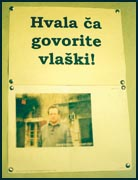 Pe unul din pereții salonului, un afiș mare te anunță de la intrare: "În această casă se vorbește doar românește". Și, într-adevăr, prietenii și foștii vecini plecați în America trec mereu pe la el ca să cuvinteze "vlașca". Sușnievița s-a golit, ca mai toate satele de istro-români. Majoritatea au plecat în America sau în Italia sau, pur și simplu, în lumea largă. Au rămas câțiva. Nici Sușnievița și nici satele dimprejur nu au o școală în limba română. Au avut o singură dată, demult, în perioada interbelică. A durat trei ani și era condusă de un personaj legendar: Andrei Glavina. Pepo e rudă cu el și a moștenit pasiunea nebunească pentru România și limba română.
Casa lui Pepo nu are uși. Pe zidurile ei umblă scorpioni mici, maronii, care își ridică amenințător acul, atunci când îi privești de-aproape. În casa, de pe bufet pe televizorul vechi și de-acolo pe pat, sar lăcuste și cosași.
- Când ai fost ultima dată în România? îl întreb. Pepo își coboară ochii albaștri. Fața lui, din rozalie devine roșie, ca de fiecare dată când vorbește despre România. Răsucește paharul cu vin pe masă, ca și cum ar încerca să îi găsească locul perfect. Își ridica privirea încețoșată de lăcrimi către mine: "Acasă în România?". Și apoi adaugă șoptit: "Acasă... În România... Nu am fost niciodată".
Tăcere. Ne uităm la el. Ne uităm unii la alții întrebându-ne din priviri dacă am auzit cu toții același lucru. "Dar virit România la mire! E bire și așa!," izbucnește cu veselie Pepo. Are lacrimi în ochi și ne ia de după umeri bucuros, ne îmbrățișam din nou. "E bire! E bire! România e inima mea!," spune necontenit. "Va iubesc! Va iubesc! Fraț ai mei!" Plin de vervă, se duce la bufet și dintr-un loc secret scoate o cutie. O ține pe palme, de parcă ar fi un sipet prețios. O așează pe mijlocul mesei și, cu mâinile tremurânde, o deschide: "Mereu România vine aisi!".
Din sipetul prețios, începe să scoată cărți de vizită. Ni le prezintă nu ca pe niște bucăți de hârtie, ci ca și cum fiecare întrupează însuși personajul înscris acolo: profesorul cutare de la Roma, celebrul lingvist de la Timișoara, reporterul cutare de la televiziunea din Iași, consulul României la Zagreb. Pe fundul cutiei sunt câteva fotografii, tăieturi din ziare și cărți poștale primite din România. Vedeți? pare sa spună. România a venit la mine și eu mereu o am cu mine. La ea visez pe Muntele Maggiore. Istro-românii așteaptă România. Acolo e limba lor și e casa lor din "bătâri".
Prin curtea cu iarbă, Pepo ne-a condus pana la poartă. "Într-o zi, o să mă însor cu o româncă," ne-a spus la despărțire. "Nu știu cum o să se întâmple, pentru că eu nu am cum să plec de-aici, dar știu că așa o să fie. O să avem copii și o să vorbim cu toții românește."
Un singur lucru ne-a cerut Pepo. Dacă o să mai trecem vreodată pe la el, să îi aducem cărți. Cărți în limba română. Și, mai ales, un abecedar. Istro-românii ca el, deși vorbesc limba română, nu au văzut niciodată un abecedar în limba maternă. Vrea un abecedar să nu își uite limba. Să nu se uite pe sine. Să nu piardă tot ce are mai de preț: "limba bătârilor".
Zvonciarii din Jeiăni
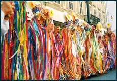 Sunt șapte. În picioare au opinci. Nojițele merg strâns în sus, pe picior, peste ițari. În față le atârnă tigve goale, legate de brâu. Poartă un soi de cojoace lungi până la pământ, acoperite cu fășii de hârtie colorată. Pe cap au măști ciudate, împodobite. Și sus de tot, pe creștet, fiecare dintre ei poartă un soare. Câțiva trecători s-au oprit în piața Del Unita din Trieste și se uită pe jumătate timizi, pe jumătate curioși, fără să știe la ce să se aștepte de la făpturile astea, care nu seamănă cu nimic din ce-au văzut până acum. Brusc, cei șapte încep să se miște. Joacă apăsat, de pe un picior pe altul, învârtindu-se în cerc. Pe cojoacele lor, ascunse sub hârtie colorată, încep să sară clopotele și sunetul lor este asurzitor. Ei sunt zvonciarii. Italienii se îngrămădesc să-i vadă. Publicul crește și, în curând, toată piața e cu ochii pe ei. Dansul ritualic, bizar, venit acolo din alte timpuri și parcă din altă lume, continuă. Dar dacă pentru italienii de pe margine e o ciudățenie, pentru cei câțiva români, dansul zvonciarilor mișcă ceva în adâncul sufletului. Seamănă cu capra românească, deși clopotele legate de cojoace sunt identice cu cele ale brondoșilor din Maramureș. Și soarele zamolxian plutește peste capetele noastre.
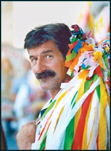 E, de fapt, cel mai vechi obicei păstrat de istro-românii din Croația: zvonciarii. Ei alungă în primăvară duhurile rele, dansând așa pe ulițele satului. Ei aduc fertilitatea. Opincile sunt moștenite de la bătrâni. Ițarii făcuți la război. Clopotele bătute de fierarul satului. Într-un singur sat s-au mai păstrat, ca prin minune, toate astea: Jeiăni. Un sat pierdut în munții Istriei, ascuns printre creste de piatră și păduri.
"Șansa noastră poate că a fost izolarea," spune Mauro, care folosește un traducător. Vrea sa fie înțeles exact. Să-și transmită complet mesajul. "Până în urmă cu câțiva ani, se ajungea greu în satul nostru, nu era șosea ca acum. Din cauza asta, chiar dacă satul a fost ras din temelii în timpul războiului și oamenii s-au refugiat, Jeiăni s-a ridicat din nou și și-a păstrat destul de bine tradițiile. Și mai ales limba."
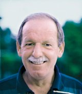 În Jeiăni, toată lumea vorbește românește, o română străveche, desigur, dialectală, exact ca Mauro și ceilalți zvonciari. Vorbind cu oamenii din acest sat pierdut, am senzația că mă plimb printr-un muzeu al limbii române. Fiecare țăran din Jeiăni cu care am stat de vorbă e un tezaur, un muzeu ambulant. "Așa cuvintam noi. Ce-i mare lucru?".
Jeiăni a fost și mai izolat decât satele de la poalele Muntelui Maggiore. Spre deosebire de Sușnievița, unde cândva a existat o școală în limba română, aici nu a existat niciodată nimic. Nu au avut niciodată cărți în limba română. Cu toate astea, cuvintele seamănă izbitor sau sunt identice. "Așa am învățat limba, așa s-a vorbit de când ne știm," spun oamenii.
Deși istro-româna este al patrulea dialect important al limbii române, doar câțiva lingviști au studiat limba locuitorilor din Istria. Chiar și azi, cercetătorii ar găsi femei care știu să descânte cu cărbuni puși în apă sau să spună de deochi, într-un fel ce seamănă izbitor cu ceea ce este în România. Înainte să se facă șoseaua, întregul sat era de ciobani. O meserie ciudată, pentru clima mediteraneeană, unde nu se face transhumanță. Dar oamenii "așa au pomenit" și așa au trăit până în urmă cu două generații. Acum nu mai sunt ciobani în Jeiăni. Civilizația, venită în viteză pe autostrăzi sau șosele, deșiră necontenit ultimele urme românești. Zvonciarii sunt aproape ultima redută de tradiții.
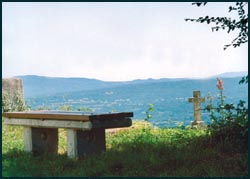 La o masă lungă, în căminul cultural al satului, zvonciarii povestesc bucuroși despre streghe și munți, ciobănia de altădată sau plante miraculoase. E o undă de tristețe în glasul lor. știu că își povestesc sfârșitul ce se desfășoară implacabil sub ochii lor. Ar vrea să își păstreze limba, obiceiurile. Ar vrea să își audă copiii vorbind limba română. După toate poveștile însă, întrebarea lor cade ca o ghilotină: "Ce puteți face pentru noi ca să ne salvăm?".
"Nas," "nas," "pițior," "picior"
E încălțată cu teniși. Poarta jeansi. Ca orice tânăr la 17 ani. E la liceu. Își dă șuvițele după ureche și zâmbește timid: "Îmi plac motocicletele. Deja am un scooter și, cum să zic, mă simt liberă și fără griji când plec singură pe motocicletă".
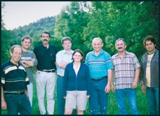 O cheamă Cristina. Cristina Carlović. "Da, știu românește," mi-a spus în fața porții. Locuiește în satul Sucodru. "Codru, adică Monte Maggiore. Și satul e sub codru. De-asta numele este așa," îmi explică. Se uită la mine să vadă dacă am înțeles româna ei. Și eu sunt uimit să înțeleg și ea este uimită că eu înțeleg.
Liceul ei este în oraș. La liceu are o mulțime de prieteni. Au motociclete și se plimbă împreună. Îi place să danseze și merg împreună la dans. Pentru toți prietenii ei, Cristina e un pic mai specială: atunci când vorbește cu părinții la telefon, nimeni nu înțelege nimic din limba ciudată în care li se adresează, dar care seamănă destul de mult cu italiana. E limba română, le explică ea.
Nici un tânăr de vârsta ei nu vorbește româna. Nici la liceu și nici în sat. "În satul meu, sunt ultima vorbitoare de limba română. Am învățat-o în casă, în familie, doar vorbind. Nu există cărți sau gramatici pentru limba mea. După mine, nimeni nu o să mai vorbească româna în Sucodru. Tinerii în nici un caz. Eu mai vorbesc doar cu părinții și cu oamenii mai în vârstă."
A auzit de România. București nu știe ce este. În schimb, își duce degetele la nas și spune: "nas". "Nas," răspund și eu. Îmi duc mâna la picior și spun: "picior". "Ie, pițior," zâmbește Cristina. "Ochi. Dinte. Ureche. Frunte," continuă ea. Îmi întinde mâna: "mâra". Eu râd. Râde și ea.
Cătălin Manole
Foto: Iulian Ignat
August 20, 2007
© 2007 Formula As